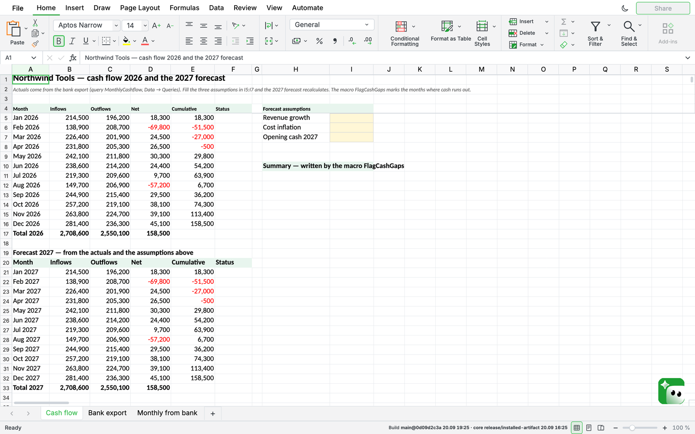
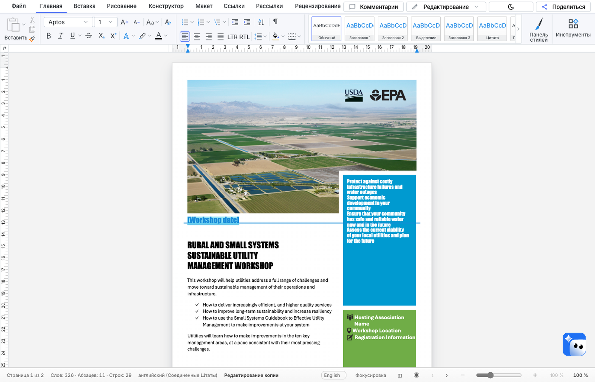

Excel and Word files keep working — macros, Power Query, files back intact — with the SumOffice editors as your Office server. The file stays in Odoo: every read and every write runs with the rights of the person who opened it, and the macro project travels with the workbook byte for byte.


The server is published as ready-to-run containers with a single glue for both editors; the same server also answers Nextcloud, ownCloud and other WOPI hosts.
Round trip on a live Odoo 18 stand: a macro-enabled workbook and a Word document were opened, edited and saved back. The VBA project came back byte for byte, and every picture in the document came back byte for byte. Speed figures are not published here, because they depend on your own server.
Questions and licensing: hello@sumoffice.com